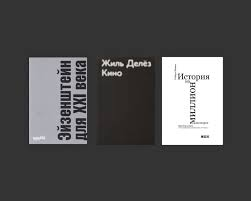
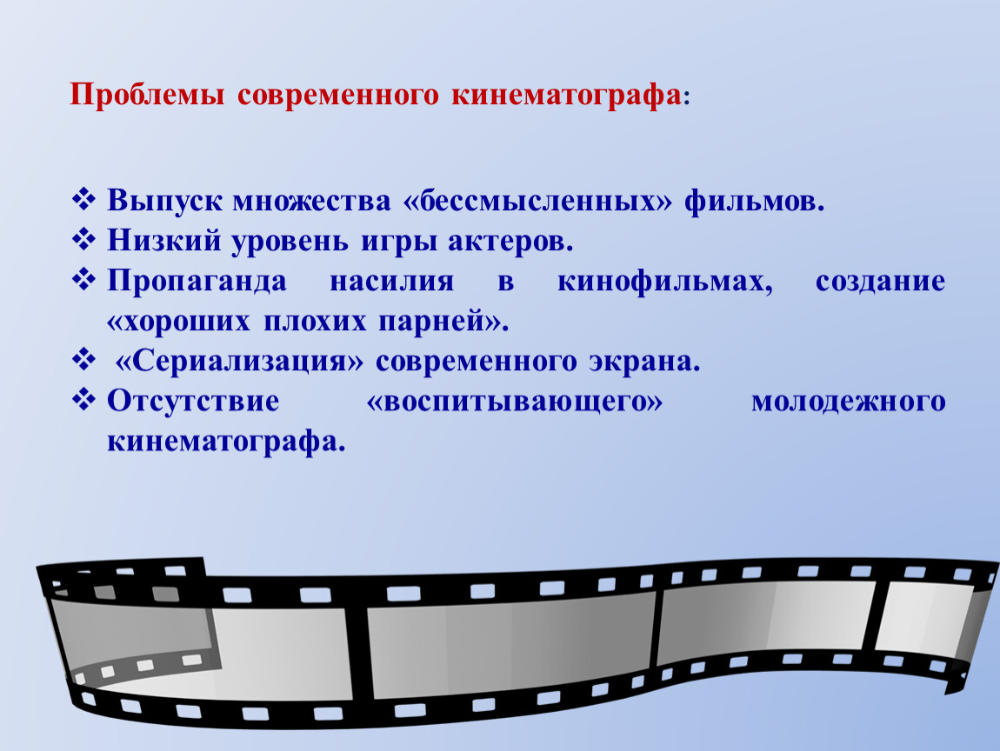

Современное кино


Современное кино радует разнообразием жанров - на больших экранах можно увидеть яркие блокбастеры, оригинальные трагикомедии и даже высокохудожественные фильмы на грани арт-хауса.
Но есть общие тенденции в кинематографе, они показывают, в каком именно направлении мы двигаемся. Итак, какое кино ждет нас в будущем и почему?
- Добро уходит в подполье, а зло приобретает популярность?
- Да, происходит прямо противоположное тому, что было раньше. Возможно, я сделал такое пессимистическое заключение из-за своего возраста. Молодежь находит это абсолютно нормальным.
Лично я не хотел бы заводить роман с молодой женщиной, которая ходит с проколотым оголенным пупком, я нахожу это отталкивающим. Но если ее приятели находят это привлекательным, не мне их судить.
Если Вы захотите услышать мою нравственную
оценку терроризма или войны, я Вам ее скажу. Но давать нравственную оценку вкусам - не мое дело. Я создавал не теорию уродства, а историю уродства, именно для того, чтобы показать, что это понятие может меняться.
Умберто Эко: 'Нынешнее поколение славит зло'("Le Figaro", Франция) интервью Жан-Марк Паризи (Jean-Marc Parisis), 16 ноября 2007
Летом 2007 года я получил счастливую возможность познакомиться с целым рядом фильмов мирового и отечественного кинематографа. Просто было много свободного времени, которое надо было чем-то заполнить,
а поскольку дело происходило на теплоходе, где я был лишен привычного ритма и стиля жизни, то просмотр видеодисков и стал очень удачно заполнять паузы от чтения книг и любования берегами Волги.
Вечерами я смотрел кино. Впрочем, выбор дисков был достаточно ограниченным и я еще раз убедился в том, что подборки фильмов с очень низким качеством воспроизведения (хоть на обложках теперь исправно воспроизводят
запись о том, что видеопрограмма лицензирована), не только ужасны по форме, но и столь же убоги по содержанию. Очень редко среди импортных 10-12 фильмов, которые технически грамотные составители «домашних коллекций»
умудрялись втиснуть на один диск, хоть один можно было досмотреть до конца. Унылые однообразные сюжеты, длинные непонятные эпи-зоды, снятые в темноте, с максимальным количеством каких-то шорохов и постукиваний,
но с минимумом дублированного текста, очень быстро отбивали интерес к фильму и заставляли жалеть о потраченном на просмотр времени. При этом частенько обнаруживал, что не у одного меня возникали такие же чувства.
Дело в том, что, как я потом понял, большинство этих «лицензированных» копий снимали прямо в кинозале простенькой цифровой камерой, установленной на штативе. И вот было очень забавно наблюдать, как мимо экрана,
очевидно к выходу, движутся один за другим силуэты зрителей, которые голосовали ногами, уходя из кинозала… Стала понятна и темнота большинства эпизодов картины: при хорошо поставленном свете сразу же можно было заметить
примитивность декораций, всего антуража мизансцен, да, скорее всего, и отвратительную игру актеров. Невольно, в сравнении, вспоминались яркие, насыщенные светом фильмы из эпохи соцреализма.
Я уже несколько лет подозреваю, что за разноцветными обложками книг, которые столь внезапно появились на полках книжных магазинов, и за столь же яркими упаковками видео-фильмов на прилавках, заполненных штабелями видеодисков,
кроется абсолютная пустота, вакуум. Ну, возможно, не абсолютная пустота, несколько процентов продукции заслуживают внимания. А из этого ничтожного количества какие-то доли процента могут вызвать и восхищение. Но в целом
современное кино – интеллектуальная жвачка, которой очень успешно забивают мозги потребителей, коварно похищая у нас самое дорогое – наше свободное время.
Сейчас, на втором десятилетии перехода России в «светлое капиталистическое будущее», многие люди начинают, впрочем, пока еще смутно, осознавать, что все выставленное на прилавки великолепие, это, прежде всего, товар,
который следует очень быстро продать. А содержание, полезность всего этого, вторично, и большей частью к внешнему виду, к яркой упаковке не имеющее почти никакого отношения. Те люди, которые должны все это продавать,
прекрасно воплотили в жизнь старую истину: по одежке встречают… И эта истина оказалась очень близкой к искусству современного кинематографа. Чтобы продать фильм, его надо хорошо упаковать.
И вдруг в ряду этих упакованных фильмов вдруг появляется работа мастера. Я имею в виду фильм Андрея Кончаловского «Глянец».
Самое интересное, что мне сначала попалась на глаза критическая статья Бориса Белокурова «Дура в стане гламура», напечатанная в газете «Завтра», № 36 (720) в сентябре 2007 года. А через несколько дней посмотрел и сам фильм. Сразу хочу дис-танцироваться от статьи, поскольку мое впечатление от фильма совершенно иное.
Я записываю эти свои мысли, не имея сейчас доступа в Интернет, но постараюсь в самое ближайшее время заглянуть туда и познакомиться с отзывами зрителей. Мне кажется, что этот фильм должен вызвать много полярных мнений. Но сейчас у меня перед глазами лишь публикация Бориса Белокурова, и вот с ним-то мне и хочется поспорить.
Уже в первом абзаце статьи четко обозначена предлагаемая читателям установка, вызывающая мое несогласие с автором. Белокуров пишет: «Тема под названием «Путь в высшее общество» была до дна истоптана в кино… Но отчего-то – не от малого ли размаха неоперившихся крыльев фантазии? – она не перестает преследовать нас». Очень печально, что автор статьи во всем фантасмагорическом зоопарке персонажей фильма видит пресловутое «высшее общество». А ведь, Андрей Кончаловский ни в коем случае не пытается показать нам то, что можно назвать «высшим обществом». И если у Белокурова возникла ассоциация показанного нам в фильме «глянцевого бомонда» с высшим обществом, то его устремления и оценка всего происходящего в нашей стране, оказываются на уровне менталитета тем самых провинциальных девушек, рвущихся в столицу любой ценой.
Андрей Кончаловский блестяще показывает нам в своем фильме всю призрачность и фальшь того пути развития, по которому движется как паровоз наша столица, увлекая за собой всю Россию.
И этот путь, всеми правдами и неправдами, правящие партии, демократы и либералы, пытаются навязать всей России. Я еще не видел ни в одном отечественном фильме столь яркого и беспощадного обличения той сверкающей, покрытой тонкой пленкой завораживающего глянца, человеческой плесени, которая покрыла нашу, еще совсем недавно, простую жизнь, и настойчиво заполняет все пустоты, пытается проникнуть везде. Жизнь, которая еще так недавно била ключом в Москве, в столице, куда хотелось попасть, и которой гордился каждый советский человек. Ведь та жизнь звала пусть и в «зияющие», по определению А. Зиновьева, но все-таки – высоты! А эта, представленная в фильме, даже не пытается замаскировать свою мерзость, ну, разве что, сбрызгивает приятным парфюмом, чтобы хоть на мгновение заглушить вызывающий рвоту запах.
Прошу понять меня правильно: в той нашей жизни эпохи социализма было много лжи и фальши. К моему величайшему сожалению, почти все начальники, с которыми меня, наивного комсомольца-активиста, сводила жизнь в 60-70 годы, оказывались приспособленцами, паразитирующими на прекрасных коммунистических идеях. Было страшно и обидно, что именно они укрепились на разных уровнях административной и партийной власти, но всегда ободряла мысль о том, что эти негодяи пристроились на локомотиве, который все-таки нес нас в светлое будущее. Страна-то двигалась, как представлялось большинству, в правильном направлении, нам было о чем мечтать, было куда стремиться. И Москва была тогда центром, точкой этого стрем-ления. Никогда не забуду свою гордость, когда я стал лауреатом первого тура 4 Всероссийского конкурса артистов эстрады. В далеком 1974 году в наш провинциальный Саратов на первый тур съехалось около 600 участников со всего Поволжья. А лауреатами этого зонального тура стали всего шесть человек. И только нас, нескольких счастливцев, пригласили в Москву, в театр эстрады на второй тур. Пусть мы все не прошли на третий тур, но гордость и счастье оттого, что побывали в столице, увидели весь цвет эстрады тех лет, и сами были участниками такого состязания, до сих пор невольно вызывает столь памятное волнение. В ту Москву, Москву той далекой жизни, очень хотелось попасть, чтобы лично поучаствовать в творческом, созидательном процессе.
Иное дело теперь. Уже лет десять, как я выбираюсь в Москву только по неотложным делам. И никакого внутреннего восторга от ожидания предстоящей встречи со столицей уже давно не испытываю. Если бы не друзья, не общение с ними, то пропади он пропадом, этот мегаполис, ставший совершенно чужим для меня городом.
И Андрей Кончаловский мастерски рисует эту страшную картину разрушения человеческой сущности, пришедшей в нашу страну. В этом фильме он еще раз показал себя блестящим культурологом и социологом. Он предельно точно демонстрирует обыденность всей шокирующей мерзости, которая вызывает пло-тоядное слюноотделение у желтой прессы и у определенной публики, сидящей в первых рядах на показе мод. Актеры в фильме играют просто великолепно! Не могу понять Бориса Белокурова, который обо всех актерах заявляет, что они «… играют в одной претенциозно-истеричной манере». Это просто обидно читать, увидев блестящую игру Ефима Шифрина. Образ настолько точен, что я, наверное, не смогу теперь без смеха наблюдать показ коллекций одежды, созданных некоторыми отечественными кутюрье.
И сколь же хорош Кончаловский, показывающий, в общем-то, высокий уровень образования у своих персонажей (чего только стоят рассуждения о точке бифуркации!), и высочайшую сметливость, чувство меры и определенного вкуса. Просто заслушаешься волшебными звуками, которые Петя извлекает из символически одинокого рояля. Ведь это здорово показано – утонченная натура… И как же блестяще характеризует всю внутреннюю мерзость этой натуры высказанное с сатанинской усмешкой, переходящей в сатанинский хохот, утверждение, что «…у меня сразу два бога: русский и еврейский! Когда они меня просят, я им хороших цыпок поставляю, наверх!» Этот кощунственный цинизм сразу все ставит на свое место: ведь только хула на Духа Святого не прощается на Страшном Суде, этого хулителя ничто не спасет. И через какое-то время еще одно тонкое подтверждение – Петя забывает о том, что уже стоит на пороге вечности, когда властьимущий клиент посулил ему миллион долларов.
Андрей Кончаловский своим фильмом великолепно иллюстрирует и по-своему предельно точно трактует библейскую истину: «…Горе миру от соблазнов, ибо надобно прийти соблазнам; но горе тому человеку, через которого соблазн приходит».
Владимир Свечников
Апрель 2010 года